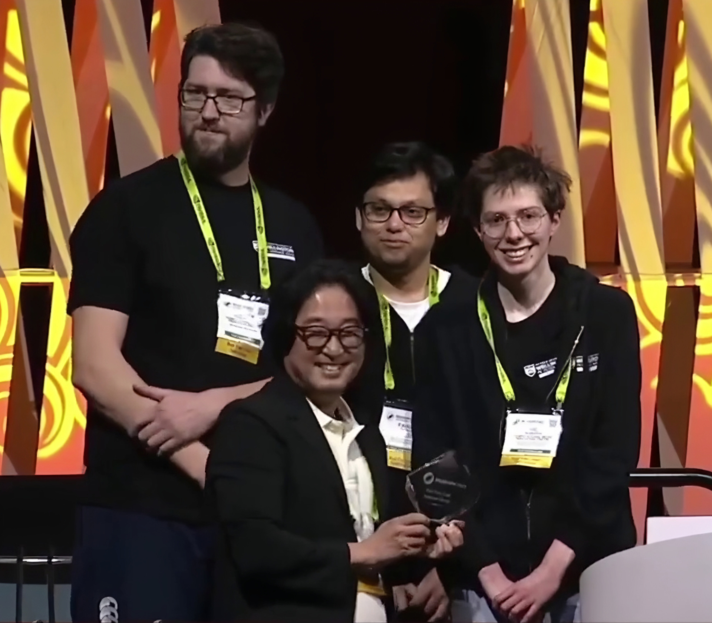

Special Interest Group on Computer Graphics and Interactive Techniques (SIGGRAPH) is the premier worldwide conference and exhibition in the field of computer graphics and emerging media technologies. This year marked the event's 50th anniversary, during which 20,000 attendees descended on Los Angeles from across the world.
“It is the top conference to publish research at, present tech demos, and all the big tech companies attend this event to scope out the latest advancements in the field,” says Andrew Chalmers, a member of the winning team and a Research Fellow in the Computational Media Innovation Centre (CMIC).
Associate Professor Rhee is the director of CMIC at Te Herenga Waka—Victoria University of Wellington. CMIC aims to be a global leader in digital media, engaging in collaborative projects and developing next-generation frameworks in the areas of immersive, interactive, and intelligent media technologies.
Among the other presentations, panel discussions, demonstrations, exhibitions, and interactive workshops on offer at the conference, Associate Professor Rhee and his group presented a demonstration of their mixed reality stage performance technology at the ‘Real-time Live!’ session. This session focuses on novel real-time graphics and emerging interactive technologies, showcased in front of an audience of more than 2,000 people. Acceptance to the session is highly competitive—this demonstration was one of only 13 that were selected by peer-review from around the world.
The project presented pioneering technology showcasing live visual effects for stage performances. This included real-time 3D modelling, rendering, and interaction between real or virtual performers and audiences. As part of the demonstration, 360-degree cameras and LiDAR (Light Detection and Ranging) sensors were on stage to capture the stage and audience, enabling interaction between virtual elements and performers. Research Fellow Andrew Chalmers, PhD student Faisal Zaman, and Research Assistant Vic Roberts also participated in the demonstration as part of the CMIC team.
The project—"Real-time Stage Modelling and Visual Effects for Live Performances”—won the session’s Audience Choice Award, a significant international accomplishment. It won the audience vote against demonstrations by other prominent groups in the field, such as NVIDA and ROBLOX.
“It was recognised as a pioneering innovation in real-time live technology and performance by experts in computer graphics, interactive technology, and the emerging media sector,” says Associate Professor Rhee.
He attributes much of this success to the dedication and hard work of the CMIC team.
“The exceptional efforts of each member have greatly contributed to this achievement, a testament to the creativity, innovation, and collaborative spirit that defines our team.”
Watch their winning presentation at SIGGRAPH 2023 Real Time Live! here.
Another presentation from Victoria University of Wellington received an award, with Fanni Fazakas’ virtual reality experience taking out the SIGGRAPH 2023 VR Theatre Best in Show. Fanni Fazakas is a Senior Lecturer in the School of Design Innovation, and is the director of “Missing 10 Hours VR”. This narrative VR project aims to educate and raise awareness about GHB, a depressant often used as a date-rape drug. Users are led through a night out and must make choices about what actions to take as a bystander when a friend is drugged with GHB at a party.
“I hope that all SIGGRAPH participants will realise how crucial it is to take action, and to understand that these real-life situations are very complex,” says Fazakas. “It only takes moments to make the wrong choices.”